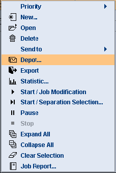
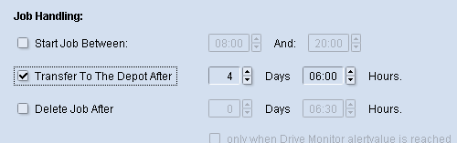

Примечание: Вы можете хранить только те задания, которые завершены.
Примечание: Вы можете хранить только те задания, которые завершены.
Вы можете хранить задания на отдельной вкладке, чтобы сохранить свой список заданий приятным и четким. Хранимые задания перемещаются на вкладку «Депо», и вы больше не можете видеть их на других вкладках списков заданий. Хранимые задания могут быть перепечатаны, если это необходимо. Они могут быть удалены навсегда, когда они больше не нужны.
Чтобы сохранить одну или несколько заданий, пометьте их в списке заданий и щелкните правой кнопкой мыши, чтобы отобразить контекстно-чувствительное меню. Выберите команду «Depot».

Выбранные задания сохраняются. Вы можете просмотреть эти задания во вкладке «Депо», перепечатать или навсегда удалить их.
В виртуальном принтере (см.) Открыть виртуальный принтер или создать новыйВы можете установить, что задания будут архивироваться автоматически.

Когда вы проверите опцию «Передача в депо после» и установите время в текстовом поле, все задания, обзаданиенные этим виртуальным принтером, будут храниться автоматически после этого периода.
Copyright © 2013 Heidelberger Druckmaschinen AG